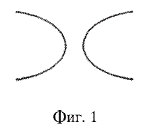

Беседа 2155 от 3877 · Беинса Дуно
Слуга на доброто
"Добрата молитва"
Размишление върху 6 глава от Притчи, 6 стих. „Иди при мравката, о лениви, прегледай пътищата и стани мъдър."
Ние може да кажем сега: Иди при мравката, о човече. Думата „лениви" може да се замени с „човече". Кой да отиде при мравката? Кой е правият път? Бих ви загатнал да напишете кой е правият път. Поетически кой е правият път? За един инженер кой е правият път? Най-късият път е правата линия. Под прав път се разбира една работа, извършена с най-малко разноски от чисто практическо гледище. Сега другото положение. От какво произтичат съвременните мъчнотии у хората? На какво се дължат мъчнотиите? Могат да се дадат много отговори. Щом се увеличават мъчнотиите или се намаляват, какво заключение може да си извади човек? Ако влезеш в един тунел и се намалява светлината, какво означава това? Най-после съвършено може да се изгуби светлината и, ако излизаш от един тунел и се увеличава светлината, какво показва това? От условията на светлината влизаш в един тунел. Това външни или вътрешни условия са? (Външни.) Тогава светлината вътре ли е или вън? Във физическия свят светлината къде е? - Вън. А в духовния свят къде е? (Вътре.) Защо на физическия свят светлината е отвън, а в духовният свят е отвътре? Пилето, когато е в яйцето, къде е? (Вътре.) А пък като се излюпи пилето, къде е? (Вън.) Значи всички неща, които са вътре, са неизлюпени. Вътре са, в майките са. А пък всички неща, които са излюпени, са вън, в движение.
В съвременната наука съвременното човечество има в съзнанието нещо, което човек не разбира. Съвременните учени вървят по един неразбран път. Хубаво е да бъдеш в яйцето. Няма страдание, нямаш нужда от ядене. Но имаш една възможност: яйцето може да се развали. Хубаво е да бъдеш извън яйцето. Но ще бъдеш гладен, жаден, мъчнотии ще имаш. Тогаз кое положение е по-хубаво. Вътре в яйцето или вън от яйцето? И в яйцето има мъчнотии и извън него има мъчнотии. Кои мъчнотии са повече? (Вътрешните.) Добре, допуснете сега друго едно изяснение. Допуснете, че един човек го бият, но той няма съзнание, не чувствува болка, колкото и да го бият. Другите могат да го съжаляват, казват: „Убиха този човек." Но той не чувствува болка. Питам тогава: Кой е пострадал - когото бият или който гледа, че бият? Кой страда повече? Бият го, но той нищо не казва. Не чувствува никаква болка. Това го правят съвременните лекари. Те поднасят едно упоително вещество под носа, правят на човеците операция. Ако съзнанието му беше в тялото, щеше да чувствува голямо страдание. Но няма го съзнанието. Как се нарича това състояние, когато човек не чувствува болка? (Анестезия.)
Човек минава в своето развитие във втора фаза. Първите 7 години на своя живот човечеството е минало, и вторите 7 години човечеството е минало. Значи човек минава в областта на космическия астрален свят. Цялото човечество е загазило в някои мочурляци. Изгубило е пътя, мочурляци има доста. Там е загазило цялото човечество. Всички вие се намирате в тези мочурляци - наляво, надясно, направо, нагоре, надолу. И всички търсите пътя. Търсите един път, по който да излезете навън. Всичките страдания седят в тези мочурляци. Гледаш едно голямо страдание. Голям мочурляк. Влажни са краката малко. Това обяснение задоволява ли? (Не.) Не ви задоволява. Аз да ви дам обяснение защо не ви задоволява. Сега вземам гледището на един съвременен човек. Той вече до известна степен е влязъл в областта на умствения свят, едва сега е стъпил на границата в света на човешката мисъл. Представете си една модерна ученичка на 19 години. По естество тя има вкус да има хубава шапка, хубави обуща. Представете си, че тя е от средно съсловие, баща й няма пари, но иде Великден. Тя си въобразява хубава дреха с колан, лачени обуща и, като излезе навън, да се показва. Радва се, радва се, че ще има нещо за Великден. Но баща й не може да ги купи и тя е неразположена, не й се яде. Где е страданието й сега? Какво й липсва? Хляб й дават, легло има, има къде да спи, а пък я мъчи нещо. Защото не може да си тури шапката на главата и да се облече с дрехите, които иска, това се мъчи. Кажете ми какво е изгубила. Тя е изгубила само това, че умствените дрехи, умствената шапка не е могла да ги тури на себе си. Кажете ми, какви страдания има тя сега. Кожата не й дерат от гърба. Казвам, че всички страдания се намират в това, че се дължат на естествени положения. Това е свързано с друг един психологически закон. Когато човек е влязъл в областта на духовния свят, аз го наричам свят на човешкото сърце.
Има едно опущение някъде. Човек е направил едно опущение. Първият човек го е направил и, както и да го разправят, това опущение е причина за много неприятности, които сега стават в живота. Защото всички неприятности, които сега стават в света, произтичат от света на човешкото съществуване. Не че мислиш. Ти пожелаваш нещо, но това, което пожелаваш не е разумно, а пък ти мислиш, че е необходимо. И това пожелание произвежда смърт в съзнанието на човека. Хвърля сянка в съзнанието. Да допуснем сега, нека вземем за изяснение, че ти желаеш да бъдеш силен, да имаш дарби, да бъдеш музикален. Не е лошо това желание да бъдеш силен. Но за какво може да употребиш тази сила един ден? Говорите с някого по някой научен въпрос и той ви казва, че вие нищо не разбирате. И вие, без да се аргументирате повече, повярвате му и го набивате. Казвате: „Как така аз да не разбирам!" Питам: Тази сила на място ли е? Какво иска да каже приятелят ти, че ти нищо не разбираш? Понеже онзи разговаря философски, ти го набиваш. Онзи като ти казва, че ти не разбираш нищо, това значи, че не знаеш къде да туриш нещата. Всички неща, които са красиви, имат общ център, имат отношение, а пък безобразните нямат общ център. Питам сега това трябва ли да се случи? Някой казва: „Непременно трябва да се случи." Аз седя и се разговарям с него. Знам му характера, аз съм по-умен. Седя на два метра разстояние от него и между нас има едно препятствие. Казвам му: Ти не знаеш нищо. От два метра разстояние той може ли да ме засегне? - Не. Ще направи движение с ръка, но няма да ме засегне. За да ме засегне, трябва да съм много близо до него. При силния човек наблизо ли трябва да бъдеш или надалече? - Надалече. Да има една преграда. Като му кажеш „ти не разбираш", да не може да ти направи нищо.
То е същият закон. В една фабрика се движи едно колело. Нали трябва да бъдеш далече от това колело. Онзи приближава и му казваш: „Ти не разбираш нищо. Кой ти е дал право да се въртиш?" Това колело ще те смачка. То ще ти каже: „Не те пита никой." Сега другото положение. Постъпвате, да кажем, в една прогимназия в първи клас. Какво се постига в първи клас? Или да вземем първия клас на нисшата академия. Знаете ли кой е първият клас на нисшата академия? Това е първото отделение. Какво се добива от първия клас на нисшата академия? Единственото знание, което се добива, кое е? Буквите на човешката писменост и съчетанието им, да може да четеш онова, което са писали, да може да разбираш човешките мисли, желания и постъпки, написани в книгите, и после в първо отделение ще научиш и малко да смяташ. До колко смятат в първо отделение? (До 20.) Това е голяма наука. Първата десеторка е начало на живота, 2 десеторки има в 20. За мене е важно, че е дадено начало. Първо едно и две. Имате числото 1. Щом прибавите нулата, нали става 10? - От това аз виждам условията, при които единицата може да се прояви. Ако на едного дам 10 стотинки, какво би направил? Или какво би направил с 10 лева? Какво би направил с десет хиляди лева? Какво би направил с десет милиона лева? Какво би направил с десет милиарда лева? Какво би направил с десет трилиона? Какво би направил с десет квадралиона? Докъде може да се спреш с това количество? Най-първо, да кажем, имаш 10 стотинки. Като ги погледнеш, някъде може да ги туриш. После имате 10 лева, после имате десет хиляди. Но десет ми лиона златни лева може ли да ги носите? (Могат да ги носят.) Могат да носят, това е външната обстановка. За да може да разбираш числото 10, ти трябва да разбираш закона на двойката. Движението на двойката не е като движението на единицата. Всичките части на единицата, ако ги поставите на кръга, еднакво отстоят от центъра, но при двойката имате вече елипса. Точките на периферията им не седят на еднакво разстояние от центъра. Да кажем, че имате нещо в живота, което трябва да постигнете. Трябва да знаете по кой път ще го постигнете. Има известни желания, които са елиптични. Има известни желания, които са параболични. Има известни желания, които са хиперболични, или това го наричат 1, 2, 3, 4 и пр. Постижението на човешките желания при един център е едно, при елипсата имате поляризирано два центъра. При параболата колко центъра са? При хиперболата нещата пак са постижими. Само че там едно нещо се среща със своето противоположно (фиг. 1). Две тела, които вървят по един хиперболичен път и са еднакво положителни, те ще се отблъскват. Ще вземете двама души, които са еднакво честолюбиви. Всеки иска да постигне нещо невъзможно - по хиперболата. Следователно ние казваме: Нещата могат да се мислят, но в един живот желанията в хиперболата са непостижими.

Да допуснем, че имате една мъчнотия в света. В училище не разбирате нищо. Какво трябва да приложите? - Ще учиш. Като станеш слуга на учението, като стане учението господар в тебе, това учение ще победи невежеството. Сега законът може да го приложите. Законът е все същият: Ако ти не станеш слуга на обичта, омразата не може да победиш. Законът е този: Ти искаш Любовта, нали? Ти не може да имаш общение с Любовта, ако не си й слуга. Трябва да й станеш слуга, нищо повече. Ако станеш слуга на Любовта, тя ще действува в тебе, пък ако искаш да станеш господар на Любовта, тогава ти ще бъдеш на противоположния полюс. Тя ще те отхвърли нищо повече. Тогава ти си на противоположния полюс. Това е злото в света. Да искаш да станеш господар на Любовта, това е омраза. Омразата е противоположното. Затова всичките работи сега са така объркани. И в младостта, и в старостта. Хората се намират в един свят, който и младите, и старите не разбират. Старият, който казва, че има разумност, много малко знае и той. Старият човек е остарял, защото не е разбрал света. Младият изгубил силата си, понеже и той не разбира този свят. Щом губиш, не си го разбрал. Щом остаряваш, не си го разбрал. Щом губиш любовта си, не си я разбрал. Щом осиромашаваш, не си я разбрал. Осиромашал си - това е един резултат. Защо си осиромашал?
Другите разсъждения са следните. Вие се приближавате при един извор с едно празно шише. Наливате вода в шишето, затваряте го и си тръгвате. В какво седи вашето щастие? В шишето ли, което носите? Така е, но същевременно и в идеята, че като се изпразни вашето шише, вие можете да отидете при извора и да го напълните. Значи две неща стоят в ума ви. Докато ходите при извора и пълните шишето, вие сте радостни, но допуснете, че този извор пресъхне. Ще ви стане мъчно, защо? Защото нямате какво да вземете.
По същия закон животът, любовта в света, не е ли един извор, от който вие постоянно черпите? Следователно дотогава, докато ходите, вие вземате правилно; добро е това. Но един ден вашият извор на любовта пресъхне. А знаете ли кога пресъхват изворите на любовта? Той си отива. Не че пресъхва, но отива на друго място и се проявява. Сега във вашия ум остава една идея, пак старата философия: защо светът да е така нареден. Коя е причината, че мислите така? Коя е подбудителната причина? Коя е причината, че се явява този въпрос във вас? Причината е, че вие не искате да слугувате, нищо повече. Вас ви е страх от слугуването. Искате да бъдете господари, а не слуги. Следователно казваш: „Не мога ли аз да бъда господар?" А пък законът е, че двама господари на едно място не могат да живеят. Единият като е господар, другият ще е слуга. После могат да се сменят. Един господар трябва да има. И двама слуги на едно място не може да има. Вие събирали ли сте двама слуги на едно място. Съберете двама слуги и ще видите, че единият ще стане господар. Старият слуга ще стане господар на новия слуга. Старият слуга ще каже: „Тази работа така не става, а така става." Двама души на едно място няма.
(Учителя поглежда часовника. Поглежда и своя часовник.)
Часовникът ви не е точен. Много прогресивен е. Четири минути разлика има. Но четири минути за светлината това са 45 милиона мили. Сега ще заключа само с едно. Да ви представя какво разбирам под думата реалност. Ще взема реалността в най-простата форма, а пък вие може да я облечете в по-строгата научна форма, да й турите форма, каквато искате. Представете си, че един благодетел ви носи един чувал брашно. Смлял го е в една модерна мелница и вие казвате: „Благодаря." Как ще се отплатите на този благодетел? Ето как аз ще направя. Веднага щом донесе брашното, ще извадя две кила брашно, ще извадя точилката и ще почна да точа баница, ще взема едно кило сирене, шопско сирене, най-хубавото, което правят. Ще туря по малко сирене на всеки лист, после прясно масълце, ще туря листа на тавата, на една голяма тава, после втори, трети лист, четвърти лист, пети лист и т. н. След това ще напаля печката хубаво, ще я опаля, ще оставя само жаравата, ще туря тавата и ще се зачерви баницата. Като се опече, отрязвате едно парче, опитвате само, после отрязвате друго парче и давате на този, който е донесъл брашното, давате му и той казва: „Радвам се. Много хубаво брашно съм донесъл. Хубаво източи баницата."
Та сега ви пожелавам, като ви донесат брашно, да си наточите баница. Законът е: Първо опитвайте и после давайте на другите.
„Отче наш"
29 лекция от Учителя, държана на 4 май 1934 г., София, Изгрев.